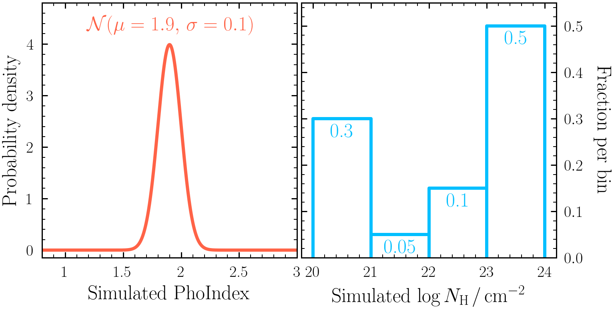

When constraining a parameter for a sample of sources, it can be useful to determine what parent model could have generated the parameter posteriors you have constrained. This session uses Hierarchical Bayesian modelling to do this.
Key objectives:
Alternatively, you can just download the script and use it in your directory.
- Understand the concept of parent distributions
- Combine individual posteriors to constrain a parent distribution
- Constrain a variety of parent distribution models for a given set of posteriors
$ pip install posteriorstacker
Alternatively, you can just download the script and use it in your directory.
-
First, generate a fake population by simulating the sources described in the csv file here. Each row represents a realisation of
model 2to simulate, in whichPhoIndexandlog(nH)have been simulated from the distributions: - After simulating each source, bin and re-fit the spectra with
model2to derive posteriors onPhoIndex,log(norm)andlog(nH). Make sure to use uninformative priors for all parameters. Important: if the posterior samples were to be obtained with a non-uniform prior, the posterior samples should first be resampled according to the inverse of the prior that was used. - Next, package 1000 samples from the
PhoIndexandlog(nH)parameter posteriors, ready forPosteriorStackerto use in the later sections. To do this for e.g.,PhoIndex, run the following command from the directory containing the simulatedoutputfiles_basenamedirectories (note parameters with brackets in the name should be written in quotes):$ load_ultranest_outputs.py sim_0/ sim_1/ sim_2/ sim_3/ sim_4/ sim_5/ sim_6/ ... \ --samples 1000 \ --parameter PhoIndex \ --out posterior_samples_PhoIndex.txt
posterior_samples_PhoIndex.txtfile contains 1000 sampled rows of eachPhoIndexposterior. - Visualise the data by calculating the 16th, 50th & 84th quantiles of each posterior sample and plotting as an errorbar. E.g., in Python:
import numpy as np import pandas as pd quantiles = [16, 50, 84] x = np.loadtxt("posterior_samples_PhoIndex.txt") q = np.percentile(x, quantiles, axis = 1) df = pd.DataFrame(data = {"q%d" %(qvalue): q[i] for i, qvalue in enumerate(quantiles)}) import matplotlib.pyplot as plt plt.xlabel("PhoIndex") plt.errorbar(x=df["q50"], xerr=[df["q50"]-df["q16"], df["q84"]-df["q50"]], y=range(len(df)), marker="o", ls=" ", color="orange") plt.xlim(df["q16"].min() - 0.5, df["q84"].max() + 0.5) plt.show()
Exercise 4.2 - Gaussian parent distribution
Here we will combine several individual source posterior distributions to derive a Gaussian sample distribution for the photon index.
- Run PosteriorStacker on the
posterior_samples_PhoIndex.txtfile generated in Exercise 4.1:
$ posteriorstacker.py posterior_samples_PhoIndex.txt 0.5 3. 10 --name="PhoIndex"PosteriorStacker then fits two models for the parent sample distribution: a histogram model with each bin height as the free parameters (using a Dirichlet prior) and a Gaussian model with mean and sigma as the free parameters. - Examine the
posteriorsamples.txt_out.pdffile. - What can you say about the distribution of
PhoIndex? What would happen if you acquired more posterior samples and/or used higher signal-to-noise spectra to fit?
Exercise 4.3 - histogram parent distribution
Now you have created a Gaussian parent population for photon index using PosteriorStacker, this exercise will focus on an NH distribution acquired with the histogram model.
- First run
PosteriorStackeron thelog(nH)posterior samples file generated in Exercise 4.1:$ posteriorstacker.py posterior_samples_lognH.txt 20 24 4 --name="PhoIndex" - Next load the parent model posterior using
pandas:df = pd.read_csv("histogram/chains/equal_weighted_post.txt", delim_whitespace=True) - Each column of the posterior is an individual column density bin fraction. Use the posterior to estimate the 16th, 50th and 84th quantiles of each fraction found with the parent model. Are the fractions consistent with the distribution originally simulated from shown in Exercise 4.1?
- Now simulate the same spectra as described by the csv file in Exercise 4.1 with Chandra, re-fit with BXA using only the Chandra spectra and generate the parent population histogram in column density. Are any of the histogram bin fraction uncertainties decreased? Why or why not?